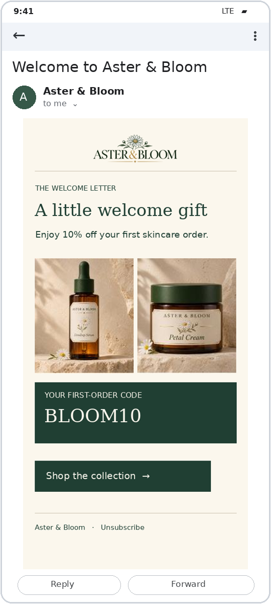
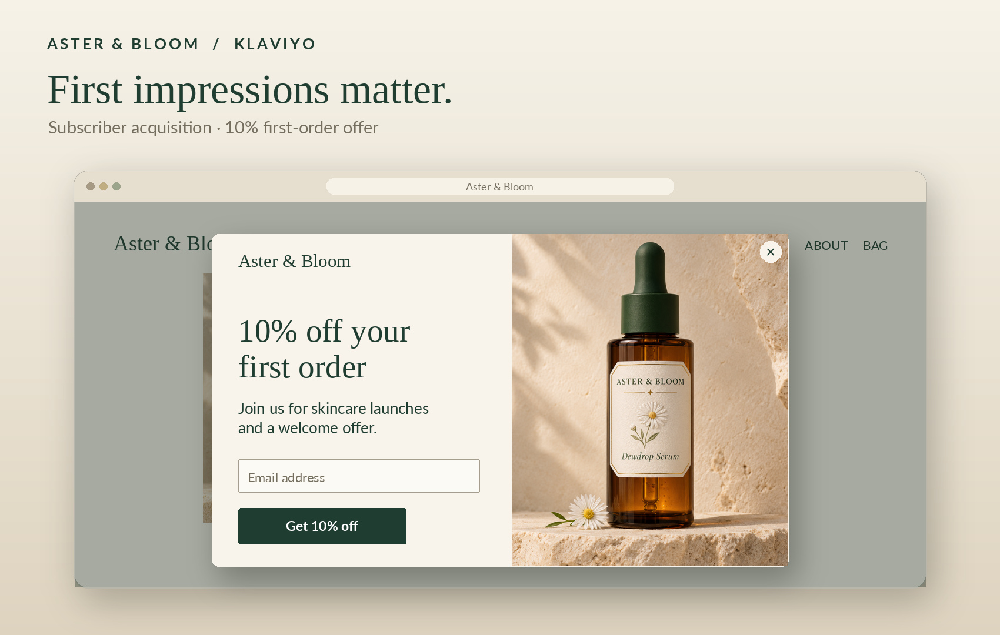
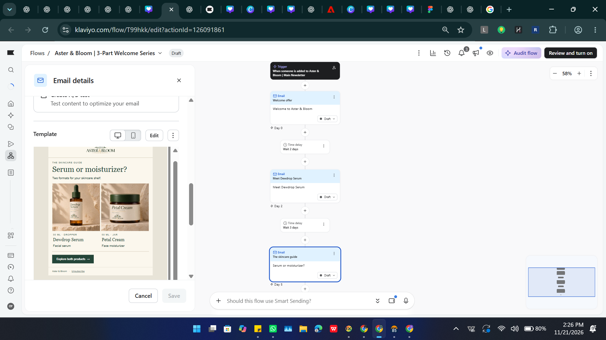
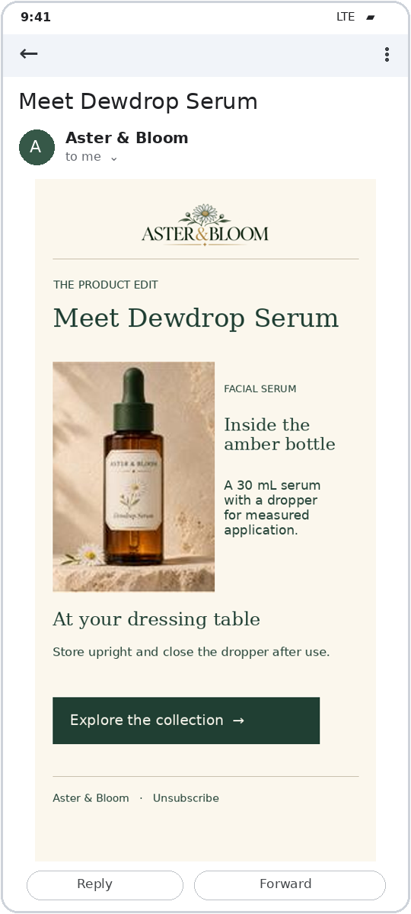
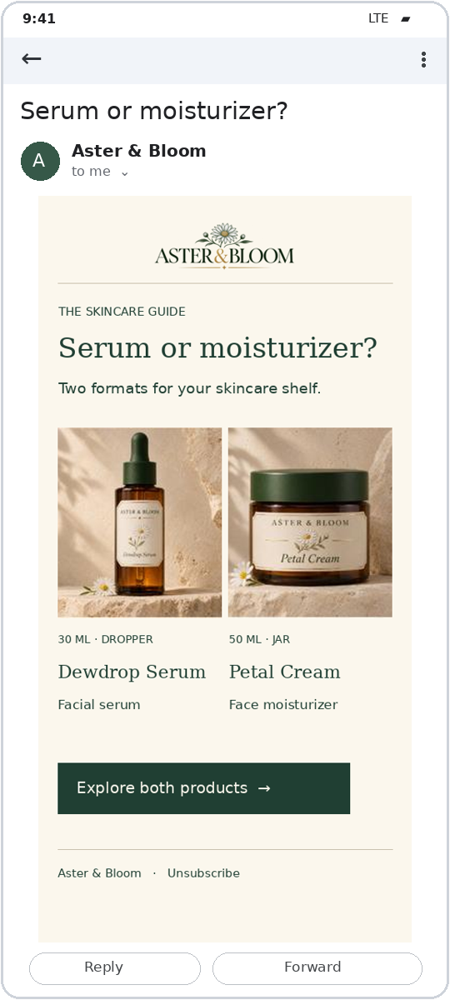

Day 0 · Welcome
Where's my discount?
The first message immediately delivers BLOOM10 and sends subscribers toward the skincare collection.
Klaviyo · Independent portfolio project
A skincare shopper signs up for 10% off. Rather than sending a generic sequence, the brand welcomes them with the code, introduces Dewdrop Serum, then helps them choose between serum and moisturizer.

The brief
The independent project focused on collecting an email address, delivering a clear first-order offer and guiding new subscribers through two skincare products without overwhelming them.

01 / Subscriber capture
The form asks only for an email address and offers 10% off the first order. Warm ivory, dark forest green and the skincare imagery establish the design language used in every email that follows.
The welcome offer is easy to recognize, not hidden inside a long sales message.
Klaviyo setup
The list-triggered flow was configured to send a welcome email immediately, follow up after two days and finish with a simple product guide on day five. The screenshot shows the actual draft flow setup.

The three-email sequence
Consistent typography, restrained product imagery and clear links give the sequence one recognizable identity across mobile inboxes.

The first message immediately delivers BLOOM10 and sends subscribers toward the skincare collection.

An introduction to the 30 mL dropper bottle, with a practical tip about closing the dropper after use.

Two product cards compare Dewdrop Serum (30 mL) and Petal Cream (50 mL) before a clear “Explore both products” link.
Where the project stands
The portfolio build includes the signup popup, a three-part Klaviyo welcome sequence, branded email designs, email copy and mobile presentations. The intended journey is simple: sign up → receive the code → discover a product → compare options.
Project status: the flow is configured in Klaviyo as a draft. No live campaign results, conversion uplift or customer sales are claimed for this concept project.
Email design & ecommerce experiences